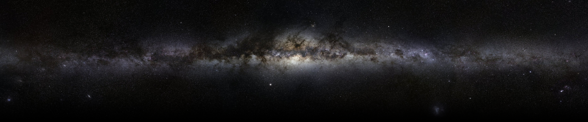

About me
I like Japanese animation and animation in general. Also I love serials and films about hackers and computer subjects. Sometimes I play the guitar and the piano. I love games and I'd like to create them. programming is my disease, I really like this thing. I also do 3d modeling and prototyping, game design and drawing. Politically, I believe that there should be no countries. Religiously I'm a pastaarian.
Favorite serials: Game of Thrones, Silicon Valley, Braking Bad
Favorite animes: K-on, SAO, NGNL, Yuru Yuri
Favorite films: Snowden, We are legion, V for vendetta, Hacker wars
Favorite games: Tomb Raider series, Crash Bandicoot series, Witcher 3, Battlefield series, Overwatch